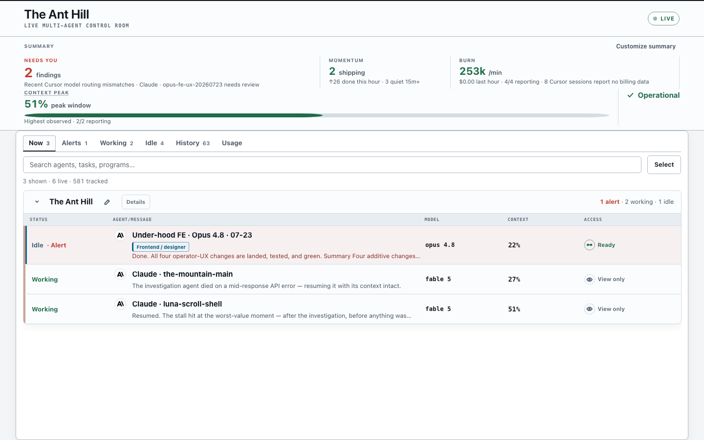
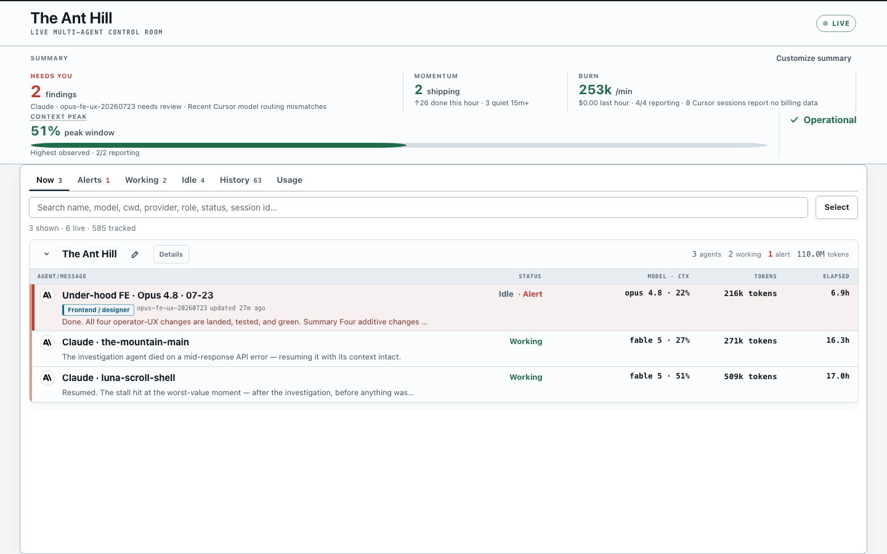
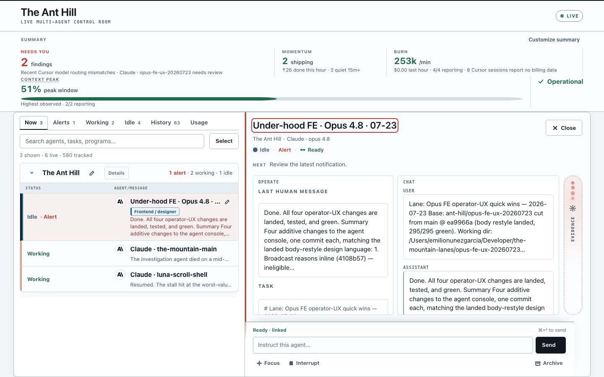
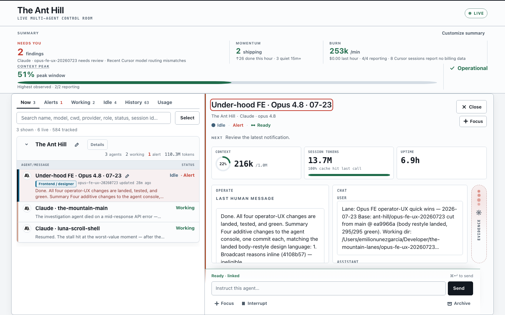

The Ant Hill — what changed in the last day
Left: yesterday's build (00f4bf0, still running at 127.0.0.1:4710). Right: what's live now (5b71f38 at 127.0.0.1:4701). Same live data, same moment, both real servers — open both links and compare by hand any time.
1 · The main room, side by side


2 · The inspector drawer, side by side


The full restyle step-by-step archive (per-task before/after shots) lives in ~/Developer/the-mountain-lanes/qa-baseline-20260722/ — open compare.html there for the granular walk.
3 · Everything that landed (all crews, ~36 hours)
| When | Program / crew | What you got, in plain terms | Status |
|---|---|---|---|
| Jul 23 early | Pulse strip (PR #1) | The old "Act now / Be aware" band became one calm pulse strip: needs-you count, momentum, burn, context peak, health. | LIVE |
| Jul 23 morning | Body restyle (3 workstreams, ~21 commits) | Whole-app visual overhaul: design-language tokens everywhere, verdict-first inspector, row instruments (model·context·tokens·elapsed on every row), program rollups, denser rows (one more per screen), keyboard focus fixes. 295 tests. | LIVE |
| Jul 23 midday | State cards (PR #2) | Issues and investigations render as ledger-style cards with a plan brief and verdict result instead of raw text walls. | LIVE |
| Jul 23 midday | Vitals collectors (BE) | Token/usage numbers are now truth-guarded: latest-turn vs session totals kept separate, absent data shown as unknown instead of zeros. | LIVE |
| Jul 23 afternoon | Under-hood BE (SOL crew) | Dashboard stops guessing: a Codex session with no recorded model now says "not reported" instead of silently assuming one. Model facts moved to config/models.json so new models are a config edit, not a code change. Failed "send instruction" attempts now say exactly what happened. | LIVE |
| Jul 23 afternoon | Identity doctor (Fable crew) | The session↔terminal matching now keeps its evidence: /api/debug/identity answers "why is this agent quarantined / why can't I Focus it" in one request. Confirmed matches are remembered (sticky bindings) so a momentary scan miss no longer breaks Focus/Send. New ARCHITECTURE.md explains the whole machine. | LIVE |
| Jul 23 afternoon | Operator UX (Opus crew) | Broadcast tells you why a recipient is grayed out; search reveals its powers; rows show which cmux terminal an agent lives in, and Focus previews its destination before you click; quiet rows admit their age. | LIVE |
| Jul 23 now | Scroll shell + sticky headers | Fix in flight on a fresh branch: the room keeps headers pinned while long lists scroll. | IN FLIGHT |
4 · The Cursor data gap — investigated, fixes in flight
Measured on the live system: of 220 Cursor sessions tracked, 188 showed no model (85%), 220 of 220 showed no token usage, and Composer had never been detected once.
Verdict from a full read of every Cursor database on this Mac: the model blindness is our bug, not Cursor hiding data. Cursor records the model in fields the dashboard never read — terminal sessions carry it inside each reply (recoverable for 92% of sessions, every family: Grok, Composer 2/2.5, GPT, Claude) plus a newer clean field on recent sessions, and GUI sessions carry it in the editor's own conversation store (100% of 863 conversations, every Composer variant present). The dashboard had been reading a marketing sentence out of the system prompt, which only Grok's prompt contains.
Token usage is different: it genuinely is not on your disk. Cursor's local stores were scanned exhaustively (40,000 message records, every candidate field name): the usage counters exist but are permanently zero locally — real consumption lives only on Cursor's servers/billing dashboard. The dashboard will keep saying "unknown" there because anything else would be invented. One honest extra exists: Cursor stores how full each conversation's context window is (available for 77% of GUI sessions), which can power the context gauge as long as it's labeled "context used", never billing.
RESOLVED — landed and live the same day. Two Opus 4.8 crews rewired model extraction to the real fields and updated the compliance policy for native families. Final live measurement: 162 of 162 Cursor sessions now report a model — 0% blank, down from 85% this morning. The last 137 holdouts turned out to be subagent sessions (child agents spawned by a parent), a path with no model source at all until a universal by-session-id lookup was added — caught only because coverage was re-measured on production after the first deploy, not just in tests. Bonus finding now visible: 73 Cursor sessions ran BYOK models (mostly Opus thinking-high) instead of Cursor-native ones — exactly the policy violations the dashboard was built to catch, previously invisible. "Composer counts as compliant" remains a config default you can veto in one line.
5 · What's next, in plain english
- Your call — publish to GitHub. Everything above is only on this Mac. Main is several merges ahead of GitHub; say the word and it gets pushed.
- Your call — the Access column. The restyle removed the visible Ready/Quarantined column from rows (it still lives in the drawer). One line brings it back if you miss it.
- Cursor fixes (next up). Opus 4.8 crews repair model + usage reporting for Cursor sessions so Grok/Composer runs stop showing blank. Plan lands as soon as the store investigation reports.
- Speed work (queued). The server currently re-reads whole transcripts every 4 seconds; teaching it to read only new lines makes it much lighter as your fleet grows. Same for Cursor's databases.
- Keyboard driving (queued). j/k to move between agents, one key to Focus — waiting so it doesn't collide with the scroll-shell fix in flight.
- Housekeeping (queued). Old archived agents and investigation files pile up forever; they'll get an expiry. Two internal cleanups (shared origin-check helper, options-object constructor) are ticketed with the restyle crew.
Generated 2026-07-23 by the Swarm Control orchestrator. Screenshots in before-after-shots-2026-07-23/ alongside this file.